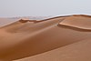

sand
matter

Source: Wikipedia
Occurs in:
- delta_beds~bottomset_sediment_sand__volume_fraction
- delta_beds~foreset_sediment_sand__volume_fraction
- delta_beds~topset_sediment_sand__volume_fraction
- delta_channel~main_entrance_water_sediment_sand__volume_fraction
- delta_channel~main_entrance_water_sediment_sand_grain__mean_of_diameter
- sea_bottom_sediment_sand__volume_fraction
- soil_sand__mass_fraction
- soil_sand__oven-dried_mass_fraction
- soil_sand__volume_fraction
- water_sand_grain__settling_speed